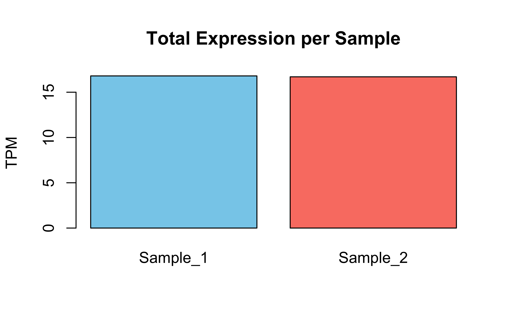
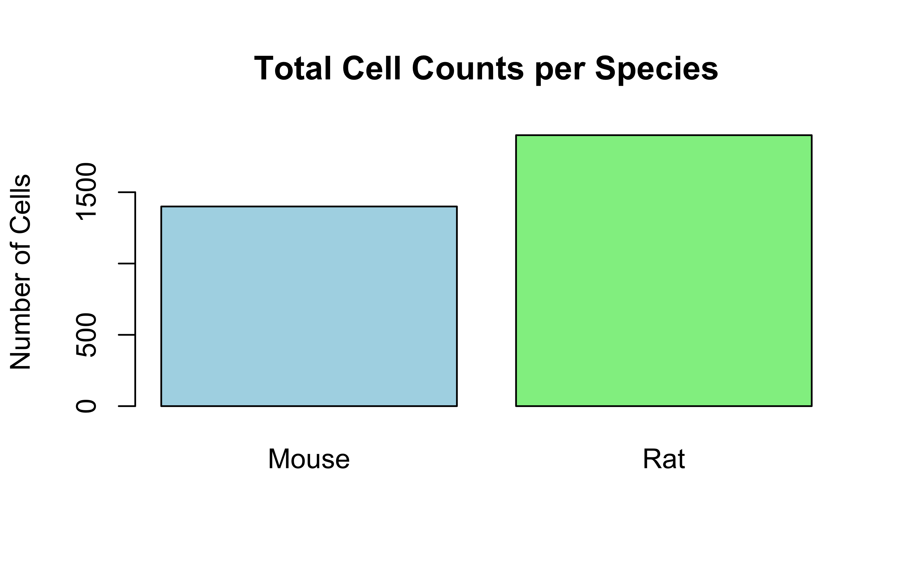
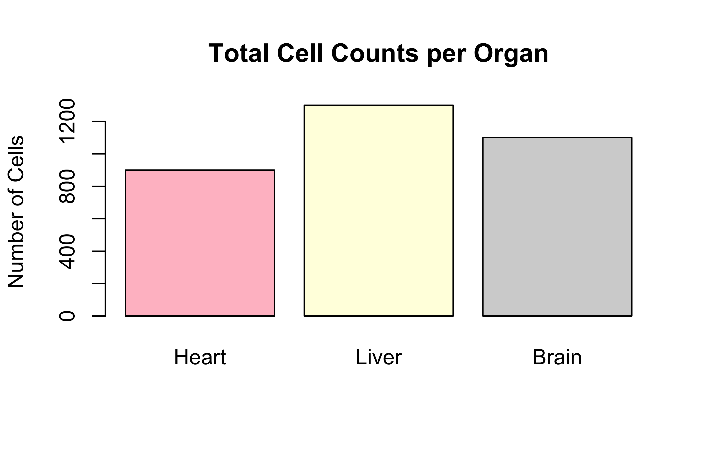

DNA<-c("A", "T", "G", "C")#character vector. Notice the quotation marks.dec<-c(10.0, 20.5, 30, 60, 80.9, 90, 100.7, 50, 40, 45, 48, 56, 55)#vector of floats. All numbers became floats, it's called coerciondec[c(1:3, 7:length(dec))]#1st to 3rd and then 7th till the end of vector `dec`. Output as a vector.
Nested functions work inside out. Think again about round(log2(x), 1) and you will see it. At first, it is making log2 of vector x and then it is rounding the log2 values to one digit after decimal. Got it?
Data Frame
Now, it’s time to use vectors to make data sets…..
We made the vectors first, and the used them to make the cartton data frame or table. We learned how to export the data frame using write.table function. Also, we learned to import or read back the table using read.table function. What are the sep, col.names, header arguments there? Why do we need them? Think. Try thinking of different properties of a data set.
Here, we directly used the vectors as different columns while making the data frame. Did you notice that? Also, the syntax is different here. We can’t assign the vectors with the assignment operator (means we can’t use <- sign. We have to use the = sign). Try using the <- sign. Did you notice the column names?
Homeworks
Compute the difference between this year (2025) and the year you started at the university and divide this by the difference between this year and the year you were born. Multiply this with 100 to get the percentage of your life you have spent at the university.
Make different kinds of variables and vectors with the data types we learned together.
What are the properties of a data frame?
Hint: Open an excel/csv/txt file you have and try to “generalize”.
Can you make logical questions on the 2 small data sets we used? Try. It will help you understanding the logical operations we tried on variables. Now we are going to apply them on vectors (columns) on the data sets. For example, in the cartoon data set, we can ask/try to subset the data set filtering for females only, or for both females and age greater than 2 years.
If you are writing or practicing coding in R, write comment for each line on what it is doing. It will help to chunk it better into your brain.
Push the script and/or your answers to the questions (with your solutions) to one of your GitHub repo (and send me the repo link).
Deadline
Friday, 10pm BD Time.
L3: Data Transformation
Firstly, how did you solve the problems?
Give me your personal Mindmap. Please, send it in the chat!
Getting Started
Installation of R Markdown
We will use rmarkdown to have the flexibility of writing codes like the one you are reading now. If you haven’t installed the rmarkdown package yet, you can do so with:
# Install rmarkdown package#install.packages("rmarkdown")library(rmarkdown)# Other useful packages we might use#install.packages("dplyr") # Data manipulationlibrary(dplyr)#install.packages("readr") # Reading CSV fileslibrary(readr)
Remove the hash sign before the install.packages("rmarkdown"), install.packages("dplyr"), install.packages("readr") if the library loading fails. That means the package is not there to be loaded. We need to download/install first.
# Clear environmentrm(list =ls())# Check working directorygetwd()# Set working directory if needed# setwd("path/to/your/directory") # Uncomment and modify as needed
RV is so fundamental of an idea to interpret and do better in any kind of data analyses. But what is it? Let’s imagine this scenario first. You got 30 mice to do an experiment to check anti-diabetic effect of a plant extract. You randomly assigned them into 3 groups. control, treat1 (meaning insulin receivers), and treat2 (meaning your plant extract receivers). Then you kept testing and measuring. You have mean glucose level of every mouse and show whether the mean value of treat1 is equal to treat2 or not. So, are you done? Not really. Be fastidious about the mice. What if you got some other 30 mice? Are they the same? Will their mean glucose level be the same? No, right. We would end up with different mean value. We call this type of quantities RV. Mean, Standard deviation, median, variance, etc. all are RVs. Do you see the logic? That’s why we put this constraint and look for p-value, confidence interval (or CI), etc. by (null) hypothesis testing and sample distribution analyses. We will get into these stuffs later. But let’s check what I meant. Also ponder about sample vs population.
Let’s download the data first.
# Download small example datasetdownload.file("https://raw.githubusercontent.com/genomicsclass/dagdata/master/inst/extdata/femaleControlsPopulation.csv", destfile ="mice.csv")# Load datamice<-read.csv("mice.csv")
# 7. Simple plots # Barplot: Total expression per samplebarplot(Total_Expression_Per_Sample, main="Total Expression per Sample", ylab="TPM", col=c("skyblue", "salmon"))

# Barplot: Total expression per genebarplot(Total_Expression_Per_Gene, main="Total Expression per Gene", ylab="TPM", col=c("lightgreen", "orange", "violet"))
# 5. Multiplying Cell Counts by Identity Matrix (no real change but shows dimension rules)Check_Identity<-Cell_Counts%*%Iprint("Cell Counts multiplied by Identity Matrix:")
# --- Simple plots ---# Bar plot of total cells per speciesbarplot(Total_Cells_Per_Species, main="Total Cell Counts per Species", ylab="Number of Cells", col=c("lightblue", "lightgreen"))

# Bar plot of total cells per organbarplot(Total_Cells_Per_Organ, main="Total Cell Counts per Organ", ylab="Number of Cells", col=c("pink", "lightyellow", "lightgray"))

# Heatmap of the original Cell Counts matrixheatmap(Cell_Counts, Rowv=NA, Colv=NA, col=heat.colors(256), scale="column", main="Heatmap of Cell Counts")
Lists are the most flexible data structure in R - they can hold any combination of data types, including other lists! This makes them essential for biological data analysis where we often deal with mixed data types.
# A list storing different types of genomic datagenomics_data<-list( gene_names =c("TP53", "BRCA1", "MYC"), # Character vector expression =matrix(c(1.2, 3.4, 5.6, 7.8, 9.1, 2.3), nrow=3), # Numeric matrix is_cancer_gene =c(TRUE, TRUE, FALSE), # Logical vector metadata =list(# Nested list! lab ="CRG", date ="2023-05-01"))
How to Access Elements of a List?
# Method 1: Double brackets [[ ]] for single elementgenomics_data[[1]]# Returns gene_names vector
[1] "TP53" "BRCA1" "MYC"
# Method 2: $ operator with names (when elements are named)genomics_data$expression# Returns the matrix
[,1] [,2]
[1,] 1.2 7.8
[2,] 3.4 9.1
[3,] 5.6 2.3
# Method 3: Single bracket [ ] returns a sublistgenomics_data[1:2]# Returns list with first two elements
patient_data<-list( id ="P1001", tests =data.frame( test =c("WBC", "RBC"), value =c(4.5, 5.1)), has_mutation =TRUE)
Common List Operations
# Add new elementgenomics_data$sequencer<-"Illumina"# Remove elementgenomics_data$is_cancer_gene<-NULL# Check structure (critical for complex lists)str(genomics_data)
List of 4
$ gene_names: chr [1:3] "TP53" "BRCA1" "MYC"
$ expression: num [1:3, 1:2] 1.2 3.4 5.6 7.8 9.1 2.3
$ metadata :List of 2
..$ lab : chr "CRG"
..$ date: chr "2023-05-01"
$ sequencer : chr "Illumina"
By the way, how would you add more patients?
# Add new patientpatient_data$P1002<-list( id ="P1002", tests =data.frame( test =c("WBC", "RBC", "Platelets"), value =c(6.2, 4.8, 150)), has_mutation =FALSE)# Access specific patientpatient_data$P1001$test
NULL
For Batch Processing:
patients<-list(list( id ="P1001", tests =data.frame(test =c("WBC", "RBC"), value =c(4.5, 5.1)), has_mutation =TRUE),list( id ="P1002", tests =data.frame(test =c("WBC", "RBC", "Platelets"), value =c(6.2, 4.8, 150)), has_mutation =FALSE))# Access 2nd patient's WBC valuepatients[[2]]$tests$value[patients[[2]]$tests$test=="WBC"]
# Base R plot from list databarplot(unlist(genomics_data[2]), names.arg =genomics_data[[1]])
This code won’t work if you run. unlist(genomics_data[2] creates a vector of length 6 from our 3*2 matrix but genomics_data[[1]] has 3 things inside the gene_names vector. Debug like this:
dim(genomics_data$expression)# e.g., 2 rows x 2 cols
Transpose the ProteinMatrix and show what it looks like.
Create the Identity matrix of compatible size and show what happens when you multiply: \[
\text{ProteinMatrix} \times I
\]
4.Do the calculations (rowSums, colSums, etc.) and visualization (barplot, heatmap) as shown in the class.
🧠 Interpretation Questions
What does multiplying the protein levels by the weight vector mean biologically?
What does the result tell you about total protein burden (or total protein impact) for each sample?
What do the identity matrix represent in the context of protein interactions or measurement biases?
If you changed the weight of ProteinZ to 3.0, how would the result change?
🧬 Gene-to-Protein Translation
You are given the following matrix representing normalized gene expression levels (e.g., TPM): \[
\text{GeneExpression} =
\begin{bmatrix}
10 & 8 & 5 \\
15 & 12 & 10 \\
\end{bmatrix}
\]
Rows = Samples:
Sample1
Sample2
Columns = Genes:
GeneA
GeneB
GeneC
Each gene translates into proteins with a certain efficiency. The efficiency of translation from each gene to its corresponding protein is given by the following diagonal matrix:
Explain what it means biologically when one parent contributes more to a particular trait.
Create an identity matrix I₃ and multiply it with ParentTraits.
What do you observe?
What does I × ParentTraits represent?
Subset the ParentTraits matrix to include only T1 and T2. Recalculate the hybrid traits.
Discuss how removing a trait affects your outcome.
📊 Visualization Tasks
Generate a heatmap of the ParentTraits matrix.
Label the rows with parent names and columns with trait names.
Enable row/column clustering.
Create a bar plot showing the HybridTraits (T1, T2, T3).
Color code each bar by trait.
What trait contributes most?
🧠 Interpretation Questions
How does the weighting of parents affect the hybrid’s performance?
What does the identity matrix represent here?
If you used equal weights (⅓ for each), how would the hybrid traits change?
What real-world limitations does this simplified model ignore?
🧠 Managing Matrices and Weight Vectors Using Lists in R
Now that you have completed four biological matrix problems — Protein concentration, gene-to-protein mapping, bull breeding value ranking, and plant trait combinations — it’s time to organize your data and weights using R’s list structure.
In this task, you will:
Group each example’s matrix and its corresponding weight vector inside a named list.
Combine these named lists into a larger list called bioList.
Use list indexing to repeat your earlier calculations and visualizations.
Reflect on the benefits and challenges of using structured data objects.
📦 Step 1: Create a master list
You should now build a named list called bioList containing the following four elements:
No R code is required here (You have them from previous part, use inside same rmd/notebook file) — just structure your data like this in your workspace.
🔧 Tasks
List the full names of each component in bioList. What are the names of the top-level and nested components?
Access each matrix and its corresponding weights using list indexing.
How would you extract only the matrix of the Plant entry?
How would you extract the weights for the Protein concentration entry?
Use the correct matrix and weights to perform:
ProteinConc: Weighted gene expression score
ProteinMap: Contribution of transcripts to each protein
Plant: Hybrid trait values
Animal: Bull total economic value
Subset one matrix in each sublist (e.g., drop a trait or feature) and repeat the weighted calculation.
What changes in the results?
Which traits/genes have the strongest influence?
📊 Visualization Tasks
Generate one heatmap for any matrix stored in bioList.
Choose one (e.g., ProteinMap or Plant)
Apply clustering to rows and/or columns
Label appropriately
Generate two bar plots:
One showing the result of weighted trait aggregation for the Plant hybrid
One showing the total breeding values for each bull
🧠 Interpretation Questions
How does structuring your data using a list help with clarity and reproducibility?
What risks or challenges might occur when accessing elements from nested lists?
Could this structure be scaled for real datasets with many samples or traits?
How would you loop over all elements in bioList to apply the same function?
How can this list structure be useful for building automated bioinformatics pipelines?
📝 Your Rmarkdown file(s) should include:
All matrix calculations (tasks). Also, name the rows and columns of each matrix accordingly.
All interpretation answers
All plots (output from embedded code)
And your commentary blocks for each code chunk
knit your rmd (or Notebook) file as html/pdf file and push both the rmd (or Notebook) and html/pdf files
Factor Variables
Important for categorical data
Creating Factors
Factors are used to represent categorical data in R. They are particularly important for biological data like genotypes, phenotypes, and experimental conditions.
origins_factor
Human Zebrafish Mouse
0.5000000 0.1666667 0.3333333
# Change reference level (important for statistical models)origins_factor_relevel<-relevel(origins_factor, ref ="Mouse")origins_factor_relevel
[1] Human Mouse Human Zebrafish Mouse Human
Levels: Mouse Human Zebrafish
# Convert to characterorigins_char<-as.character(origins_factor)# Plot factors - Basic barplotbarplot(table(origins_factor), col =c("blue", "green", "red"), main ="Sample Origins", ylab ="Count")
Note
Factor level-ing and relevel-ing are different. relevel redefines what the reference should be. For example, in an experiment, you have control, treatment1, treatment2 groups. Your reference might be control. So, all of your comparisons/statistics are on the basis of control. But you might change the reference (by relevel to treatment1 and all of your comparison will be on the basis of treatment1 group. Got it?
More advanced plot with factors:
gene_expr<-c(5.2, 7.8, 4.5, 12.3, 8.1, 3.7)names(gene_expr)<-as.character(origins)# Boxplot by factorboxplot(gene_expr~origins, col ="lightblue", main ="Gene Expression by Sample Origin", xlab ="Origin", ylab ="Expression Level")
Note
Did you notice how factor level-ing changes the appearance of the categories in the plots? See the barplot and the boxplot again. Where are Zebrafish and Mouse now in the plots? Why are their positions on the x-axis changed?
Note
Keep noticing the output formats. Sometimes the output is just a number, sometimes a vector or table or list, etc. Check prop.table(table(origins_factor)). How is it?
Got it?
prop <- prop.table(table(origins_factor)) – is a named numeric vector (atomic vector). prop$Human or similar won’t work. Check this way: propprop["Human"]; prop["Mouse"]; prop["Zebrafish"]
Or make it a data frame (df) first, then try to use normal way of handling df.
Accessing the Output:
prop<-prop.table(table(origins_factor))prop#What do you see? A data frame? No difference?
origins_factor
Human Zebrafish Mouse
0.5000000 0.1666667 0.3333333
# Handle potential duplicated row names# NOTE: R doesn't allow duplicate row names by defaultdup_genes<-data.frame( expression =c(5.2, 6.3, 5.2, 8.1), mutation =c("Yes", "No", "Yes", "No"))# This would cause an error:#rownames(dup_genes) <- c("BRCA1", "BRCA1", "TP53", "EGFR")# Instead, we can preemptively make them unique:proposed_names<-c("BRCA1", "BRCA1", "TP53", "EGFR")unique_names<-make.unique(proposed_names)unique_names# Show the generated unique names
[1] "BRCA1" "BRCA1.1" "TP53" "EGFR"
# Now we can safely assign themrownames(dup_genes)<-unique_namesdup_genes
expression mutation
BRCA1 5.2 Yes
BRCA1.1 6.3 No
TP53 5.2 Yes
EGFR 8.1 No
Note
Why is unique name important for us? Imagine this meaningful biological scenario: one gene might transcribed into many transcript isoforms and hence many protein isoforms. From RNAseq data, we might get alignment count for each gene. But then we can separate the count for each transcript. One gene has one name or ID, but the transcripts are many for the same gene! So, we can denote, for example, 21 isoform of geneA like genA.1, geneA.2, geneA.3,……., geneA.21. See this link for MBP gene. How many transcript isoforms does it have?
🏡 Homeworks: Factors, Subsetting, and Biological Insight
(Factor vs Character) Explain the difference between a character vector and a factor in R. Why would mutation_status be a factor and not just a character vector?
(Factor Level Order) You observed the following bacterial species in gut microbiome samples:
Make a dataframe using these 2 vectors first. Then,
Create a factor group_factor for the samples.
Use tapply() to calculate mean expression per group.
Note
Use ?tapply() to see how to use it.
Hint: You need to provide things for X, INDEX, FUN. You have X, INDEX in this small dataframe. The FUN should be applied thinking of what you are trying to do. You are trying to get the mean or average, right?
Plot a barplot of average expression for each group.
Use the gene_df example. Subset the data to find genes with:
expression > 8
pathway is either “Cell Cycle” or “Signaling”
Create an ordered factor for the disease stages: c("Stage I", "Stage III", "Stage II", "Stage IV", "Stage I"). Then plot the number of patients per stage using barplot(). Confirm that "Stage III" > "Stage I" is logical in your factor.
Suppose gene_data has a column type with values “Oncogene”, “Tumor Suppressor”, and “Housekeeping”.
Subset all “Oncogene” rows where expression > 8.
Change the reference level of the factor type to “Housekeeping”
Simulate expression data for 3 tissues (see the code chunk below): We are going to use rnorm() function to generate random values from a normal distribution for this purpose. The example values inside the rnorm() function means we want:
30 values in total,
average or mean value = 8,
standard deviation of expression is 2.
You can play with the numbers to make your own values.
rep() function is to replicate things (many times). In this example, we have rep(c("brain", "liver", "kidney"), each = 10). We will be having 10x “brains”, followed by 10x “liver”, followed by 10x “kidney”. So, if you have changed your values inside the rnorm() function, make this value meaningful for you. Now we have 3 things, each=10. So, 3*10=30 is matching with the total value inside rnorm() function. Got it?
set.seed(42)#just for reproducibility. Not completely neededgene_expr<-rnorm(30, mean =8, sd =2)tissue<-rep(c("brain", "liver", "kidney"), each =10)tissue_factor<-factor(tissue, levels =c("liver", "brain", "kidney"))
Make a boxplot showing expression per tissue.
Which tissue shows the most variable gene expression? (Use tapply() + sd())
Note
Hint: Variability is an expression of measuring standard deviation (sd) just by squaring it. So, var = sd^2. Well, do you see how to use sd inside tapply() function? Use ?tapply() to know how to use it.
Use these questions as a self-check – reflect on why each step works before moving on to the next level (question).
Push your .Rmd file and share by Friday 10PM BD Time.
Conditionals
if-else statement
General structure of if-else statement:
if(condition1){# Code executed when condition1 is TRUE}elseif(condition2){# Code executed when condition1 is FALSE but condition2 is TRUE}else{# Code executed when all conditions above are FALSE}
ifelse has 3 things inside the parentheses, right? The first one is the condition, the second one is the category we define if the condition is met, and the third thing is the other remaining category we want to assign if the condition is not met. So, it’s usage is perfect to say if a gene/transcript is upregulated or downregulated (binary classification).
If we still want to categorize more than 2 categories using ifelse, we need to use it in a nested way. The structure will be like this:
You remember the general structure of ifelse loop, right? the second thing after the first , is the assigned category if the condition is met. So, we assigned it as High here in this example. But then after the second , there is a second ifelse loop instead of a category. The second loop makes 2 more binary categories Medium and Low, and our task of assigning 3 categories is achieved.
dplyr package has a function named case-when() to help us use as many categories we want. The same task would be achieved like this:
# Requires dplyr package#install.packages("dplyr") #decomment if you need to install the packagelibrary(dplyr)expression_levels<-c(2.5, 5.8, 7.2, 3.1, 6.9)labels<-case_when(expression_levels>6~"High",expression_levels>4~"Medium",TRUE~"Low"# Default case)labels
[1] "Low" "Medium" "High" "Low" "High"
Note
Do you see the point how you would use the ifelse loop if you wanted to write a function to make 4 or 5 categories? If not, pause and re-think. You need to see the point. But anyway, categorizing more than 2 is better using if-else statement
BRCA1 has Moderate expression
TP53 has Low expression
MYC has High expression
CDC2 has Low expression
MBP has High expression
In-class Task:
Make a data frame using genes and expr.
Add/flag the categories High, Moderate and Low you get using the for loop in a new column named expression_level or similar.
# Step 1: Vectorsgenes<-c("BRCA1", "TP53", "MYC", "CDC2", "MBP")expr<-c(8.2, 5.4, 11.0, 5.4, 13.0)# Step 2: Create a data framegene_df<-data.frame(gene =genes, expression =expr)# Step 3: Add an empty column for expression levelgene_df$expression_level<-NA# Step 4: Use for loop to fill in the expression_level columnfor(iin1:nrow(gene_df)){gene_df$expression_level[i]<-if(gene_df$expression[i]>10){"High"}elseif(gene_df$expression[i]>6){"Moderate"}else{"Low"}}# View the final data frameprint(gene_df)
You are preparing biological samples (e.g., blood, DNA extracts) for analysis. You have a set of samples labeled Sample 1 to Sample 5. You want to check each one in order and confirm that it’s ready for analysis. Use a while loop to process the samples sequentially.
i<-1while(i<=5){cat("Sample", i, "is ready for analysis\n")i<-i+1}
Sample 1 is ready for analysis
Sample 2 is ready for analysis
Sample 3 is ready for analysis
Sample 4 is ready for analysis
Sample 5 is ready for analysis
next and break
Context:
You are screening biological samples (e.g., tissue or blood) in a quality control process. Some samples are good, some are suboptimal (not contaminated but poor quality), and some are contaminated (must be flagged and stop further processing). Use next to skip suboptimal samples and break to immediately stop when a contaminated sample is found.
# Create data with missing valuesclinical_data<-data.frame( patient_id =1:5, age =c(25, 99, 30, -5, 40), # -5 is wrong, 99 is suspect bp =c(120, NA, 115, 125, 118), # NA is missing weight =c(65, 70, NA, 68, -1)# -1 is wrong)clinical_data
patient_id age bp weight
1 1 25 120 65
2 2 99 NA 70
3 3 30 115 NA
4 4 -5 125 68
5 5 40 118 -1
colSums(is.na(clinical_data))# Count NAs by column
patient_id age bp weight
0 0 1 1
# Check for impossible valuesclinical_data$age<0
[1] FALSE FALSE FALSE TRUE FALSE
clinical_data$weight<0
[1] FALSE FALSE NA FALSE TRUE
# Find indices of problematic valueswhich(clinical_data$age<0|clinical_data$age>90)
[1] 2 4
Fixing Data
# Replace impossible values with NAclinical_data$age[clinical_data$age<0|clinical_data$age>90]<-NAclinical_data$weight[clinical_data$weight<0]<-NAclinical_data
patient_id age bp weight
1 1 25 120 65
2 2 NA NA 70
3 3 30 115 NA
4 4 NA 125 68
5 5 40 118 NA
# Replace NAs with mean (common in biological data)clinical_data$bp[is.na(clinical_data$bp)]<-mean(clinical_data$bp, na.rm =TRUE)clinical_data$weight[is.na(clinical_data$weight)]<-mean(clinical_data$weight, na.rm =TRUE)clinical_data
patient_id age bp weight
1 1 25 120.0 65.00000
2 2 NA 119.5 70.00000
3 3 30 115.0 67.66667
4 4 NA 125.0 68.00000
5 5 40 118.0 67.66667
# Replace NAs with median (better for skewed data)clinical_data$age[is.na(clinical_data$age)]<-median(clinical_data$age, na.rm =TRUE)clinical_data
Outliers can significantly affect statistical analyses, especially in biological data where sample variation can be high.
# Create data with outliersexpression_levels<-c(2.3, 2.7, 3.1, 2.9, 2.5, 3.0, 15.2, 2.8)boxplot(expression_levels, main ="Expression Levels with Outlier", ylab ="Expression")
Mathematical transformations can normalize data, reduce outlier effects, and make data more suitable for statistical analyses.
# Original datagene_exp<-c(15, 42, 87, 115, 320, 560, 1120)hist(gene_exp, main ="Original Expression Values", xlab ="Expression")
# Log transformation (common in gene expression analysis)log_exp<-log2(gene_exp)hist(log_exp, main ="Log2 Transformed Expression", xlab ="Log2 Expression")
# Square root transformation (less aggressive than log)sqrt_exp<-sqrt(gene_exp)hist(sqrt_exp, main ="Square Root Transformed Expression", xlab ="Sqrt Expression")
# Z-score normalization (standardization)z_exp<-scale(gene_exp)hist(z_exp, main ="Z-score Normalized Expression", xlab ="Z-score")
# Compare transformationspar(mfrow =c(2, 2))hist(gene_exp, main ="Original")hist(log_exp, main ="Log2")hist(sqrt_exp, main ="Square Root")hist(z_exp, main ="Z-score")
# Subsetting with combined conditionsexp_data[exp_data>4&exp_data<7]# Get values between 4 and 7
Gene_1 Gene_5 Gene_7
5.2 6.5 4.3
Logical Functions
# all() - Are all values TRUE?all(exp_data>0)# Are all expressions positive?
[1] TRUE
# any() - Is at least one value TRUE?any(exp_data>7)# Is any expression greater than 7?
[1] TRUE
# which() - Get indices of TRUE valueswhich(exp_data>6)# Which elements have expressions > 6?
Gene_3 Gene_5 Gene_6
3 5 6
# %in% operator - Test for membershiptest_genes<-c("Gene_1", "Gene_5", "Gene_9")names(exp_data)%in%test_genes# Which names match test_genes?
[1] TRUE FALSE FALSE FALSE TRUE FALSE FALSE
Practical Session
Check out this repo: https://github.com/genomicsclass/dagdata/
# Download small example datasetdownload.file("https://github.com/genomicsclass/dagdata/raw/master/inst/extdata/msleep_ggplot2.csv", destfile ="msleep_data.csv")# Load datamsleep<-read.csv("msleep_data.csv")
Convert ‘vore’ column to factor and plot its distribution.
Create a matrix of sleep data columns and add row names.
Find and handle any missing values.
Calculate mean sleep time by diet category (vore).
Identify outliers in sleep_total.
Summary of the Lesson
In this lesson, we covered:
Factor Variables: Essential for categorical data in biology (genotypes, treatments, etc.)
Creation, levels, ordering, and visualization
Subsetting Techniques: Critical for data extraction and analysis
Vector and data frame subsetting with various methods
Using row names effectively for biological identifiers
Matrix Operations: Fundamental for expression data
Creation, manipulation, and biological applications
Calculating fold changes and other common operations
Missing Values: Practical approaches for real-world biological data
Identification and appropriate replacement methods
Data Transformation: Making data suitable for statistical analysis
Log, square root, and z-score transformations
Outlier identification and handling
Logical Operations: For data filtering and decision making
Conditions, combinations, and applications
These skills form the foundation for the more advanced visualization techniques we’ll cover in future lessons.
List: Fundamental for many biological data and packages’ output.
Properties, accessing, and applications
We will know more about conditionals, R packages to handle data and visualization in a better and efficient way.
Homework
Matrix Operations:
Create a gene expression matrix with 8 genes and 4 conditions
Calculate the mean expression for each gene
Calculate fold change between condition 4 and condition 1
Create a heatmap of your matrix
Factor Analysis:
Using the iris dataset, convert Species to an ordered factor
Create boxplots showing Sepal.Length by Species
Calculate mean petal length for each species level
Data Cleaning Challenge:
In the downloaded msleep_data.csv:
Identify all columns with missing values
Replace missing values appropriately
Create a new categorical variable “sleep_duration” with levels “Short”, “Medium”, “Long”
List challenge:
Make your own lists
Replicate all the tasks we did
You may ask AI to give you beginner-level questions but don’t ask to solve the questions programmatically. Tell AI not to provide answers.
Complete Documentation:
Write all code in R Markdown
Include comments explaining your approach
Push to GitHub
Due date: Friday 10pm BD Time
set.seed(42)# For reproducibilitygene_expr<-rnorm(30, mean =8, sd =2)tissue<-rep(c("brain", "liver", "kidney"), each =10)tissue_factor<-factor(tissue, levels =c("liver", "brain", "kidney"))tissue_factor
boxplot(expression~tissue, data =expr_data, main ="Gene Expression by Tissue", xlab ="Tissue", ylab ="Expression", col =c("lightblue", "lightgreen", "lightpink"))
max_sd_tissue<-names(sd_expression)[which.max(sd_expression)]max_sd_value<-sd_expression[which.max(sd_expression)]cat("The tissue with the highest sd is:", max_sd_tissue,", with SD =", round(max_sd_value, 2), "\n")
The tissue with the highest sd is: liver , with SD = 3.26
Citation
BibTeX citation:
@online{rasheduzzaman2025,
author = {Md Rasheduzzaman},
title = {Basic {R}},
date = {2025-05-10},
langid = {en},
abstract = {Data types, variables, vectors, data frame, functions}
}
For attribution, please cite this work as:
Md Rasheduzzaman. 2025. “Basic R.” May 10, 2025.
💬 Have thoughts or questions? Join the discussion below using your GitHub account!
You can edit or delete your own comments. Reactions like 👍 ❤️ 🚀 are also supported.
Source Code
---title: "Basic R"abstract: "Data types, variables, vectors, data frame, functions"---```{=html}<style> .content { text-align: justify !important; } p { text-align: justify !important; } .quarto-body { text-align: justify !important; }</style>``````{r}#| include: falsesource(here::here("src/helpersrc.R"))```# L2: Data Representation## Using R as a CalculatorLet's do some basic calculation.```{r}5+33+23-23*23/2#normal division7%/%2#integer division, only the quotient5%%3#modulus division, the remainder(10-5)*(2+4) #use of parentheses10-5*2+4#Noticed BODMAS?(10-5)*(2+4) #Noticed BODMAS7/(1+3); 7/1+3#multi-line codes, separated with semi-colon1+2; log(1); 1/10#more multi-line codes```## VariablesVariables are variable. We have freedom to name them as we wish. But make any variable name meaningful and identifiable.```{r}a <-5#assign value 5 to a b =10aba <- a +10b = b +15aa^2#a squareda**2#a squared again, in a different way.a^3#a qubed```::: callout-note`<-` and `=` are used to assign values. It is not mathematical equality. `b <- b + 15` might make better sense than `b = b + 15`.:::### Integer and Modulus division againDo some more practice.```{r}7/37%/%37%%3```## RoundingSome important functions we apply on numerical values```{r}x <-9/4floor(x)ceiling(x)round(x)round(x, 2) #round till 2 decimal points```## Logical OperationsGet to know TRUE/FALSE in R.```{r}a =5b =7c =10d =3a == b #is a equal to b? Ans: No/FALSEa != b #is a not equal to b? Ans: Yes/TRUEa > b #is a greater than b? Ans: FALSEa < b #is a less than b? Ans: TRUEa >= b #is a greater than or equal to b? Ans: FALSEa <= b #is a less than or equal to b? Ans: TRUEa < b | d > b #is a less than b OR d greater than b?#It's answer will be TRUE OR FALSE --> So, TRUEa < b & c > d #is a less than b AND a greater than b? It's answer will be TRUE AND TRUE --> So, TRUEa < b & d > c #is a less than b AND a greater than b? It's answer will be TRUE AND FALSE --> So, FALSE```## Help and DocumentationBut how to know more about a function? The package/library developer have written helpful documentation for us.```{r}?logexample(log)?log()```## Working with VectorsWhat is a vector? See the example and think.```{r}x <-c(1, 2, 3, 4, 5) #c means concatenatez <-1:5#consecutively, from 1 through 5. A short-hand notation using :y <-c(3, 6, 9, 12, 15, 20)length(x)mode(x)is(x)x[1] #first entry in vector yx[2:5] #2nd to 5th entries in vector yDNA <-c("A", "T", "G", "C") #character vector. Notice the quotation marks.dec <-c(10.0, 20.5, 30, 60, 80.9, 90, 100.7, 50, 40, 45, 48, 56, 55) #vector of floats. All numbers became floats, it's called coerciondec[c(1:3, 7:length(dec))] #1st to 3rd and then 7th till the end of vector `dec`. Output as a vector.```### Vector OperationsNotice the element-wise or index-wise mathematical operations (`+`, `/`, `log2()`, `round()`, etc.). Noticed?```{r}x <-1:10y <-2:11#x and y are of same lengthx + yy / xlog2(x)round(log2(x), 1) #log2 of all the values of `x`, 1 digit after decimal to round.round(log2(x), 3) #same logic```::: callout-noteNested functions work inside out. Think again about `round(log2(x), 1)` and you will see it. At first, it is making `log2` of vector `x` and then it is rounding the log2 values to one digit after decimal. Got it?:::## Data FrameNow, it's time to use vectors to make data sets.....```{r}names <-c("Mina", "Raju", "Mithu", "Lali")gender <-c("Female", "Male", "Female", "Female")age <-c(15, 12, 2, 3)is_human <-c(TRUE, TRUE, FALSE, FALSE)cartoon <-data.frame(names, gender, age, is_human)write.table(cartoon, "cartoon.csv", sep =",", col.names =TRUE)df <-read.table("cartoon.csv", header =TRUE, sep =",")dim(df) #`dim` means dimension. so, rows * columnsstr(df) #structure of `df````We made the vectors first, and the used them to make the `cartton` data frame or table. We learned how to export the data frame using write.table function. Also, we learned to import or read back the table using `read.table` function. What are the `sep`, `col.names`, `header` arguments there? Why do we need them? Think. Try thinking of different properties of a data set.### Gene Expression Table```{r}gene_expr <-data.frame(genes =c("TP53", "BRCA1", "MYC", "EGFR", "GAPDH", "CDC2"),sample1 =c(8.2, 6.1, 9.5, 7.0, 10.0, 12),Sample2 =c(5.9, 3.9, 7.2, 4.8, 7.9, 9),Sample3 =c(8.25, 6.15, 9.6, 7.1, 10.1, 11.9),pathways =c("Apoptosis", "DNA Repair", "Cell Cycle", "Signaling", "Housekeeping", "Cell Division"))write.table(gene_expr, "gene_expr.csv", sep =",", col.names =TRUE)gene_set <-read.table("gene_expr.csv", header =TRUE, sep =",")```::: callout-noteHere, we directly used the vectors as different columns while making the data frame. Did you notice that? Also, the syntax is different here. We can't assign the vectors with the assignment operator (means we can't use `<-` sign. We have to use the `=` sign). Try using the `<-` sign. Did you notice the column names?:::## Homeworks1. Compute the difference between this year (2025) and the year you started at the university and divide this by the difference between this year and the year you were born. Multiply this with 100 to get the percentage of your life you have spent at the university.2. Make different kinds of variables and vectors with the data types we learned together.3. What are the properties of a data frame? Hint: Open an excel/csv/txt file you have and try to "generalize".4. Can you make logical questions on the 2 small data sets we used? Try. It will help you understanding the logical operations we tried on variables. Now we are going to apply them on vectors (columns) on the data sets. For example, in the `cartoon` data set, we can ask/try to subset the data set filtering for females only, or for both females and age greater than 2 years.5. If you are writing or practicing coding in R, write comment for each line on what it is doing. It will help to chunk it better into your brain.6. Push the script and/or your answers to the questions (with your solutions) to one of your GitHub repo (and send me the repo link).### Deadline**Friday, 10pm BD Time.**# L3: Data TransformationFirstly, how did you solve the problems?Give me your personal Mindmap. Please, send it in the chat!## Getting Started### Installation of R MarkdownWe will use `rmarkdown` to have the flexibility of writing codes like the one you are reading now. If you haven't installed the `rmarkdown` package yet, you can do so with:```{r install-packages, eval=FALSE}# Install rmarkdown package#install.packages("rmarkdown")library(rmarkdown)# Other useful packages we might use#install.packages("dplyr") # Data manipulationlibrary(dplyr)#install.packages("readr") # Reading CSV fileslibrary(readr)```Remove the hash sign before the `install.packages("rmarkdown")`, `install.packages("dplyr")`, `install.packages("readr")` if the library loading fails. That means the package is not there to be loaded. We need to download/install first.::: callout-note[Do you remember this book by Hadley Wickham?](https://r4ds.had.co.nz). Try to follow it to get the hold on the basic R syntax and lexicon.:::### Basic Setup for Today's Session```{r initial-setup, eval=FALSE}# Clear environmentrm(list =ls())# Check working directorygetwd()# Set working directory if needed# setwd("path/to/your/directory") # Uncomment and modify as needed```### Building on Last HW:```{r}cartoon <-data.frame(names =c("Mina", "Raju", "Mithu", "Lali"),gender =c("Female", "Male", "Female", "Female"),age =c(15, 12, 2, 3),is_human =c(TRUE, TRUE, FALSE, FALSE))cartoondim(cartoon)str(cartoon)length(cartoon$names)##subsetingcartoon[1:2, 2:3] #row 1-2, column 2-3cartoon[c(1, 3), c(1:3)] #row 1-3, column 1-3#condition for selecting only male charactersmale_df <- cartoon[cartoon$gender =="Male", ]male_df#condition for selecting female characters with age more than 2 yearsfemale_age <- cartoon[cartoon$gender =="Female"& cartoon$age >2, ]female_agesum(female_age$age) #sum of age of female_age datasetsd(cartoon$age) #standard deviation of age of main cartoon datasetmean(cartoon$age) #mean of age of main cartoon dataset```[Check your colleague's repo for the Q3](https://github.com/atiyashehreen/hw_repo3/blob/main/propertiesofdataframe.txt).**Logical Operators**| Operator | Meaning | Example ||----------|------------------|------------------|| `==` | Equal to | `x == 5` || `!=` | Not equal | `x != 5` || `<` | Less than | `x < 5` || `>` | Greater than | `x > 5` || `<=` | Less or equal | `x <= 5` || `>=` | Greater or equal | `x >= 5` || `!` | Not | `!(x < 5)` || `|` | OR | `x < 5 | x > 10` || `&` | AND | `x > 5 & x < 10` |### Preamble on random variables (RV):RV is so fundamental of an idea to interpret and do better in any kind of data analyses. But what is it? Let's imagine this scenario first. You got 30 mice to do an experiment to check anti-diabetic effect of a plant extract. You randomly assigned them into 3 groups. `control`, `treat1` (meaning insulin receivers), and `treat2` (meaning your plant extract receivers). Then you kept testing and measuring. You have mean glucose level of every mouse and show whether the mean value of `treat1` is equal to `treat2` or not. So, are you done? Not really. Be fastidious about the mice. What if you got some other 30 mice? Are they the same? Will their mean glucose level be the same? No, right. We would end up with different mean value. We call this type of quantities RV. Mean, Standard deviation, median, variance, etc. all are RVs. Do you see the logic? That's why we put this constraint and look for p-value, confidence interval (or CI), etc. by (null) hypothesis testing and sample distribution analyses. We will get into these stuffs later. But let's check what I meant. Also ponder about `sample` vs `population`.Let's download the data first.```{r RV}# Download small example datasetdownload.file("https://raw.githubusercontent.com/genomicsclass/dagdata/master/inst/extdata/femaleControlsPopulation.csv",destfile ="mice.csv")# Load datamice <-read.csv("mice.csv")```Let's check now.```{r rv-check}control <-sample(mice$Bodyweight,12)mean(control)control1 <-sample(mice$Bodyweight,12)mean(control1)control2 <-sample(mice$Bodyweight,12)mean(control2)```Do you see the difference in the mean value now?### Basic Stuffs: Atomic Vector```{r atomic-vec}atomic_vec <-c(Human=0.5, Mouse=0.33)```It is fast, but has limited access methods.How to access elements here?```{r}atomic_vec["Human"]atomic_vec["Mouse"]```### Basic Stuffs: MatricesMatrices are essential for biologists working with expression data, distance matrices, and other numerical data.```{r matrices}# Create a gene expression matrix: rows=genes, columns=samplesexpr_matrix <-matrix(c(12.3, 8.7, 15.2, 6.8,9.5, 11.2, 13.7, 7.4,5.6, 6.8, 7.9, 6.5),nrow =3, ncol =4, byrow =TRUE)# Add dimension namesrownames(expr_matrix) <-c("BRCA1", "TP53", "GAPDH")colnames(expr_matrix) <-c("Control_1", "Control_2", "Treatment_1", "Treatment_2")expr_matrix# Matrix dimensionsdim(expr_matrix) # Returns rows and columnsnrow(expr_matrix) # Number of rowsncol(expr_matrix) # Number of columns# Matrix subsettingexpr_matrix[2, ] # One gene, all samplesexpr_matrix[, 3:4] # All genes, treatment samples onlyexpr_matrix["TP53", c("Control_1", "Treatment_1")] # Specific gene and samples# Matrix calculations (useful for bioinformatics)# Mean expression per genegene_means <-rowMeans(expr_matrix)gene_means# Mean expression per samplesample_means <-colMeans(expr_matrix)sample_means# Calculate fold change (Treatment vs Control)control_means <-rowMeans(expr_matrix[, 1:2])treatment_means <-rowMeans(expr_matrix[, 3:4])fold_change <- treatment_means / control_meansfold_change# Matrix visualization# Heatmap of expression dataheatmap(expr_matrix, Colv =NA, # Don't cluster columnsscale ="row", # Scale by row (gene)col =heat.colors(16),main ="Gene Expression Heatmap")```#### More Matrix Practice:```{r more-mat-practice}#Create a simple Gene Expression matrix (RNA-seq style)Gene_Expression <-matrix(c(5.2, 3.1, 8.5, # Sample 16.0, 2.8, 7.9# Sample 2), nrow =2, byrow =TRUE)rownames(Gene_Expression) <-c("Sample_1", "Sample_2")colnames(Gene_Expression) <-c("GeneA", "GeneB", "GeneC")print("Gene Expression Matrix:")print(Gene_Expression)#1. Transpose: Genes become rows, Samples become columnsGene_Expression_T <-t(Gene_Expression)print("Transpose of Gene Expression Matrix:")print(Gene_Expression_T)#2. Matrix multiplication# Suppose each gene has an associated "gene weight" (e.g., biological importance)Gene_Weights <-matrix(c(0.8, 1.2, 1.0), nrow =3, byrow =TRUE)rownames(Gene_Weights) <-c("GeneA", "GeneB", "GeneC")colnames(Gene_Weights) <-c("Weight")Total_Weighted_Expression <- Gene_Expression %*% Gene_Weightsprint("Total Weighted Expression per Sample:")print(Total_Weighted_Expression)# 3. Matrix addition# Hypothetically increase expression by 1 TPM everywhere (technical adjustment)Adjusted_Expression <- Gene_Expression +1print("Expression Matrix after adding 1 TPM:")print(Adjusted_Expression)# 4. Identity matrix I <-diag(3)rownames(I) <-c("GeneA", "GeneB", "GeneC")colnames(I) <-c("GeneA", "GeneB", "GeneC")print("Identity Matrix (for genes):")print(I)# Multiplying Gene Expression by IdentityIdentity_Check <- Gene_Expression %*% Iprint("Gene Expression multiplied by Identity Matrix:")print(Identity_Check)# 5. Scalar multiplication # Suppose you want to simulate doubling expression valuesDoubled_Expression <-2* Gene_Expressionprint("Doubled Gene Expression:")print(Doubled_Expression)# 6. Summations # Total expression per sampleTotal_Expression_Per_Sample <-rowSums(Gene_Expression)print("Total Expression per Sample:")print(Total_Expression_Per_Sample)# Total expression per geneTotal_Expression_Per_Gene <-colSums(Gene_Expression)print("Total Expression per Gene:")print(Total_Expression_Per_Gene)# 7. Simple plots # Barplot: Total expression per samplebarplot(Total_Expression_Per_Sample, main="Total Expression per Sample", ylab="TPM", col=c("skyblue", "salmon"))# Barplot: Total expression per genebarplot(Total_Expression_Per_Gene, main="Total Expression per Gene", ylab="TPM", col=c("lightgreen", "orange", "violet"))# Heatmap: Expression matrixheatmap(Gene_Expression, Rowv=NA, Colv=NA, col=heat.colors(256), scale="column", main="Gene Expression Heatmap")```Another Example: You have counts of cells in different organs for two animal species.You also have a matrix with average cell sizes (micrometer, µm²) for each organ.You can then multiply count × size to get total cell area for each species in each organ.```{r mat-prac-2}# Create a matrix: Cell countsCell_Counts <-matrix(c(500, 600, 300, 400, 700, 800), nrow =2, byrow =TRUE)rownames(Cell_Counts) <-c("Mouse", "Rat")colnames(Cell_Counts) <-c("Heart", "Liver", "Brain")print("Cell Counts Matrix:")print(Cell_Counts)# Create a matrix: Average cell size in µm²Cell_Size <-matrix(c(50, 200, 150), nrow =3, byrow =TRUE)rownames(Cell_Size) <-c("Heart", "Liver", "Brain")colnames(Cell_Size) <-c("Avg_Cell_Size")print("Cell Size Matrix (µm²):")print(Cell_Size)# 1. Transpose of Cell CountsCell_Counts_T <-t(Cell_Counts)print("Transpose of Cell Counts:")print(Cell_Counts_T)# 2. Matrix multiplication: Total cell area# (2x3) %*% (3x1) => (2x1)Total_Cell_Area <- Cell_Counts %*% Cell_Sizecolnames(Total_Cell_Area) <-"Cell_area"print("Total Cell Area (Counts × Size) (µm²):")print(Total_Cell_Area)# 3. Matrix addition: Add 10 cells artificially to all counts (for example)Added_Cells <- Cell_Counts +10print("Cell Counts after adding 10 artificial cells:")print(Added_Cells)# 4. Identity matrixI <-diag(3)rownames(I) <-c("Heart", "Liver", "Brain")colnames(I) <-c("Heart", "Liver", "Brain")print("Identity Matrix:")print(I)# 5. Multiplying Cell Counts by Identity Matrix (no real change but shows dimension rules)Check_Identity <- Cell_Counts %*% Iprint("Cell Counts multiplied by Identity Matrix:")print(Check_Identity)# 6. Scalar multiplication: double the counts (hypothetical growth)Double_Cell_Counts <-2* Cell_Countsprint("Doubled Cell Counts:")print(Double_Cell_Counts)# Total number of cells per animal (row sums)Total_Cells_Per_Species <-rowSums(Cell_Counts)print("Total number of cells per species:")print(Total_Cells_Per_Species)# Total number of cells per organ (column sums)Total_Cells_Per_Organ <-colSums(Cell_Counts)print("Total number of cells per organ:")print(Total_Cells_Per_Organ)# --- Simple plots ---# Bar plot of total cells per speciesbarplot(Total_Cells_Per_Species, main="Total Cell Counts per Species", ylab="Number of Cells", col=c("lightblue", "lightgreen"))# Bar plot of total cells per organbarplot(Total_Cells_Per_Organ, main="Total Cell Counts per Organ", ylab="Number of Cells", col=c("pink", "lightyellow", "lightgray"))# Heatmap of the original Cell Counts matrixheatmap(Cell_Counts, Rowv=NA, Colv=NA, col=heat.colors(256), scale="column", main="Heatmap of Cell Counts")```| Operation | Explanation | R Function/Example ||:-------------------|:--------------------------|:------------------------|| Matrix Creation | Create gene expression matrix | `matrix()` || Transpose | Flip genes and samples | `t(Gene_Expression)` || Matrix Multiplication | Calculate weighted sums | `Gene_Expression %*% Gene_Weights` || Matrix Addition | Adjust counts | `Gene_Expression + 1` || Identity Matrix | Special neutral matrix | `diag(3)` || Scalar Multiplication | Simulate overall increase | `2 * Gene_Expression` || Row/Column Summation | Total per sample/gene | `rowSums()`, `colSums()` || Plotting | Visualize expression patterns | `barplot()`, `heatmap()` |### Basic Stuffs: ListLists are the most flexible data structure in R - they can hold any combination of data types, including other lists! This makes them essential for biological data analysis where we often deal with mixed data types.```{r list}# A list storing different types of genomic datagenomics_data <-list(gene_names =c("TP53", "BRCA1", "MYC"), # Character vectorexpression =matrix(c(1.2, 3.4, 5.6, 7.8, 9.1, 2.3), nrow=3), # Numeric matrixis_cancer_gene =c(TRUE, TRUE, FALSE), # Logical vectormetadata =list( # Nested list!lab ="CRG",date ="2023-05-01" ))```How to Access Elements of a List?```{r access-list}# Method 1: Double brackets [[ ]] for single elementgenomics_data[[1]] # Returns gene_names vector# Method 2: $ operator with names (when elements are named)genomics_data$expression # Returns the matrix# Method 3: Single bracket [ ] returns a sublistgenomics_data[1:2] # Returns list with first two elements```Key Difference from Vectors:```{r vecVSlist}# Compare to your prop.table() example:atomic_vec["Human"] # Returns named numeric (vector)atomic_vec["Mouse"]genomics_data[1] # Returns list containing the vector```Why Biologists Need Lists?\`lm()`, `prcomp()` functions, RNAseq analysis packages produces list. So, we need to learn how to handle lists.See these examples:A. Storing BLAST results```{r list-ex1}blast_hits <-list(query_id ="GeneX",hit_ids =c("NP_123", "NP_456"),e_values =c(1e-50, 3e-12),alignment =matrix(c("ATG...", "CTA..."), ncol=1))```B. Handling Mixed Data```{r list-ex2}patient_data <-list(id ="P1001",tests =data.frame(test =c("WBC", "RBC"),value =c(4.5, 5.1) ),has_mutation =TRUE)```Common List Operations```{r list-op}# Add new elementgenomics_data$sequencer <-"Illumina"# Remove elementgenomics_data$is_cancer_gene <-NULL# Check structure (critical for complex lists)str(genomics_data)```By the way, how would you add more patients?```{r}# Add new patientpatient_data$P1002 <-list(id ="P1002",tests =data.frame(test =c("WBC", "RBC", "Platelets"),value =c(6.2, 4.8, 150) ),has_mutation =FALSE)# Access specific patientpatient_data$P1001$test```For Batch Processing:```{r}patients <-list(list(id ="P1001",tests =data.frame(test =c("WBC", "RBC"), value =c(4.5, 5.1)),has_mutation =TRUE ),list(id ="P1002",tests =data.frame(test =c("WBC", "RBC", "Platelets"), value =c(6.2, 4.8, 150)),has_mutation =FALSE ))# Access 2nd patient's WBC valuepatients[[2]]$tests$value[patients[[2]]$tests$test =="WBC"]```Converting Between Structures```{r}# List → Vectorunlist(genomics_data[1:3])```Visualization```{r, eval=FALSE}# Base R plot from list databarplot(unlist(genomics_data[2]),names.arg = genomics_data[[1]])```This code won't work if you run. `unlist(genomics_data[2]` creates a vector of length 6 from our 3\*2 matrix but `genomics_data[[1]]` has 3 things inside the `gene_names` vector. Debug like this:```{r}dim(genomics_data$expression) # e.g., 2 rows x 2 colslength(genomics_data$gene_names) # e.g., 3 genes```A. Gene-Centric (Mean Expression)```{r}barplot(rowMeans(genomics_data$expression),names.arg = genomics_data$gene_names,col ="steelblue",ylab ="Mean Expression",main ="Average Gene Expression")```B. Sample-Centric (All Measurements)```{r}barplot(genomics_data$expression,beside =TRUE,names.arg =paste0("Sample_", 1:ncol(genomics_data$expression)),legend.text = genomics_data$gene_names,args.legend =list(x ="topright", bty ="n"),col =c("blue", "red", "green"),main ="Expression Across Samples")```::: callout-noteThis matches real-world scenarios:RNA-seq: Rows=genes, cols=samplesrowMeans() = average expression per genebeside=TRUE => compare samples within genesProteomics: Rows=proteins, cols=replicatesSame principles apply:::```{r}# Calculate statsgene_means <-rowMeans(genomics_data$expression)gene_sds <-apply(genomics_data$expression, 1, sd)# Plot with error barsbp <-barplot(gene_means, ylim =c(0, max(gene_means + gene_sds)))arrows(bp, gene_means - gene_sds, bp, gene_means + gene_sds, angle =90, code =3)```**Task: Create a list containing:**i) A character vector of 3 gene namesii) A numeric matrix of expression valuesiii) A logical vector indicating pathway membershipiv) A nested list with lab metadata## 📘 Homeworks: Matrix and List Operations### 🧪 Protein Quantification in Biological SamplesYou are given the following protein concentration matrix:$$\text{ProteinMatrix} =\begin{bmatrix} 5 & 3 & 2 \\ 7 & 6 & 4 \\\end{bmatrix}$$- Rows represent samples: - Sample1 - Sample2- Columns represent proteins: - ProteinX - ProteinY - ProteinZYou are also given a weight (importance) matrix for the proteins:$$\text{WeightVector} =\begin{bmatrix} 0.5 \\ 1.0 \\ 1.5 \\\end{bmatrix}$$### 🔧 Tasks1. Make the matrices (with exact names) and multiply the ProteinMatrix by the WeightVector. That is: $$ \text{ProteinMatrix} \times \text{WeightVector} $$2. Transpose the ProteinMatrix and show what it looks like.3. Create the Identity matrix of compatible size and show what happens when you multiply: $$ \text{ProteinMatrix} \times I $$4.Do the calculations (rowSums, colSums, etc.) and visualization (barplot, heatmap) as shown in the class.### 🧠 Interpretation Questions- What does multiplying the protein levels by the weight vector mean biologically?- What does the result tell you about total protein burden (or total protein impact) for each sample?- What do the identity matrix represent in the context of protein interactions or measurement biases?- If you changed the weight of ProteinZ to 3.0, how would the result change?### 🧬 Gene-to-Protein TranslationYou are given the following matrix representing normalized gene expression levels (e.g., TPM): $$\text{GeneExpression} =\begin{bmatrix} 10 & 8 & 5 \\ 15 & 12 & 10 \\\end{bmatrix}$$- Rows = Samples: - Sample1 - Sample2- Columns = Genes: - GeneA - GeneB - GeneCEach gene translates into proteins with a certain efficiency. The efficiency of translation from each gene to its corresponding protein is given by the following diagonal matrix:$$\text{TranslationMatrix} =\begin{bmatrix} 1.5 & 0 & 0 \\ 0 & 1.2 & 0 \\ 0 & 0 & 1.8 \\\end{bmatrix}$$This means:- GeneA → ProteinA with 1.5× efficiency\- GeneB → ProteinB with 1.2× efficiency\- GeneC → ProteinC with 1.8× efficiency### 🔧 Tasks1. Make the matrices and multiply GeneExpression × TranslationMatrix to compute the resulting ProteinMatrix. - Show the result step-by-step.2. Transpose the GeneExpression matrix. What does this new matrix represent?3. Create the Identity matrix I₃ and multiply it with the TranslationMatrix. What happens?4. Create a new matrix containing only the expression of GeneA and GeneB across both samples. Call this submatrix A. - Compute the inverse A⁻¹ using `solve()` function. - Then verify:\ A × A⁻¹ = I₂### 📊 Visualization Tasks5. Plot a MARplot-style scatter plot: - x-axis: Gene expression values (GeneExpression matrix, flattened) - y-axis: Corresponding Protein values (ProteinMatrix, flattened) - Label each point as "Sample-Gene"6. Generate a heatmap of the ProteinMatrix using R’s `heatmap()` function. - Add meaningful row and column labels. - Enable clustering by rows and columns.### 🧠 Interpretation Questions- What does matrix multiplication represent biologically in this case?- Why does the diagonal TranslationMatrix make sense biologically?- What does it mean if Sample2 has higher protein levels even with similar gene expression?- How does the MARplot help interpret translation efficiency?- How does clustering in the heatmap reveal relationships between samples and proteins?### 🐄 Animal Breeding – Economic Ranking of Bulls by TraitsYou are evaluating two bulls for use in a dairy breeding program. Their Estimated Breeding Values (EBVs) are:$$\text{BullEBVs} =\begin{bmatrix} 400 & 1.2 & 0.8 \\\\ 500 & 1.5 & 0.6 \\\\\end{bmatrix}$$- Rows: - Bull1\ - Bull2- Columns: - Trait1 = Milk yield (liters/year)\ - Trait2 = Growth rate (kg/day)\ - Trait3 = Fertility (calving interval adjustment)You assign economic weights to each trait:$$\text{EconomicWeights} =\begin{bmatrix} 0.002 \\\\ 50 \\\\ 100 \\\\\end{bmatrix}$$### 🔧 Tasks1. Compute: $$ \text{TotalValue} = \text{BullEBVs} \times \text{EconomicWeights} $$ - What are the resulting values? - Which bull is more valuable economically?2. Interpret what multiplying by the economic weights means biologically.3. Create the 3×3 identity matrix I₃ and multiply it with BullEBVs. - What does it return? - What does the identity matrix mean in this case?4. Subset the BullEBVs matrix to remove Trait1 (milk yield) and recalculate TotalValue. - How does this change the ranking?### 📊 Visualization Tasks5. Create a bar plot comparing TotalValue for Bull1 and Bull2.6. Create a heatmap of the EBVs. - Label rows and columns. - Enable clustering.### 🧠 Interpretation Questions- How do economic weights affect trait importance?- Why might you ignore milk yield in some breeding programs?- What is the value of heatmaps in visualizing multivariate trait data?- Can this method be extended to more bulls and more traits?### 🌾 Plant Breeding – Trait Contributions from Parental LinesYou are breeding a new rice variety from three parental lines. The key traits are:- T1 = Drought resistance- T2 = Yield- T3 = Maturation timeThe following trait values (normalized 1–10) have been measured:$$\text{ParentTraits} =\begin{bmatrix} 7 & 5 & 3 \\\\ 6 & 8 & 4 \\\\ 5 & 6 & 6 \\\\\end{bmatrix}$$- Rows: - P1 (Parent 1) - P2 (Parent 2) - P3 (Parent 3)- Columns: - T1 = Drought resistance - T2 = Yield - T3 = Maturation timeYou design a hybrid with contributions from each parent as follows:$$\text{HybridWeights} =\begin{bmatrix} 0.5 \\\\ 0.3 \\\\ 0.2 \\\\\end{bmatrix}$$### 🔧 Tasks1. Compute the HybridTrait vector by: $$ \text{HybridTraits} = \text{HybridWeights}^T \times \text{ParentTraits} $$ Show the steps and result.2. Explain what it means biologically when one parent contributes more to a particular trait.3. Create an identity matrix I₃ and multiply it with ParentTraits. - What do you observe? - What does I × ParentTraits represent?4. Subset the ParentTraits matrix to include only T1 and T2. Recalculate the hybrid traits. - Discuss how removing a trait affects your outcome.### 📊 Visualization Tasks5. Generate a heatmap of the ParentTraits matrix. - Label the rows with parent names and columns with trait names. - Enable row/column clustering.6. Create a bar plot showing the HybridTraits (T1, T2, T3). - Color code each bar by trait. - What trait contributes most?### 🧠 Interpretation Questions- How does the weighting of parents affect the hybrid's performance?- What does the identity matrix represent here?- If you used equal weights (⅓ for each), how would the hybrid traits change?- What real-world limitations does this simplified model ignore?### 🧠 Managing Matrices and Weight Vectors Using Lists in RNow that you have completed four biological matrix problems — Protein concentration, gene-to-protein mapping, bull breeding value ranking, and plant trait combinations — it’s time to organize your data and weights using R’s list structure.In this task, you will:- Group each example’s matrix and its corresponding weight vector inside a named list.- Combine these named lists into a larger list called bioList.- Use list indexing to repeat your earlier calculations and visualizations.- Reflect on the benefits and challenges of using structured data objects.### 📦 Step 1: Create a master listYou should now build a named list called bioList containing the following four elements:- ProteinConc = list(matrix = ProteinMatrix, weights = WeightVector)- ProteinMap = list(matrix = ProteinMapping, weights = TranslationWeights)- Plant = list(matrix = ParentTraits, weights = HybridWeights)- Animal = list(matrix = BullEBVs, weights = EconomicWeights)Hint: Each inner list should contain both:- matrix = the main data matrix- weights = the vector used for multiplicationNo R code is required here (You have them from previous part, use inside same rmd/notebook file) — just structure your data like this in your workspace.### 🔧 Tasks1. List the full names of each component in bioList. What are the names of the top-level and nested components?2. Access each matrix and its corresponding weights using list indexing. - How would you extract only the matrix of the Plant entry? - How would you extract the weights for the Protein concentration entry?3. Use the correct matrix and weights to perform: - ProteinConc: Weighted gene expression score - ProteinMap: Contribution of transcripts to each protein - Plant: Hybrid trait values - Animal: Bull total economic value4. Subset one matrix in each sublist (e.g., drop a trait or feature) and repeat the weighted calculation. - What changes in the results? - Which traits/genes have the strongest influence?### 📊 Visualization Tasks5. Generate one heatmap for any matrix stored in bioList. - Choose one (e.g., ProteinMap or Plant) - Apply clustering to rows and/or columns - Label appropriately6. Generate two bar plots: - One showing the result of weighted trait aggregation for the Plant hybrid - One showing the total breeding values for each bull### 🧠 Interpretation Questions- How does structuring your data using a list help with clarity and reproducibility?- What risks or challenges might occur when accessing elements from nested lists?- Could this structure be scaled for real datasets with many samples or traits?- How would you loop over all elements in bioList to apply the same function?- How can this list structure be useful for building automated bioinformatics pipelines?📝 Your Rmarkdown file(s) should include:- All matrix calculations (tasks). Also, name the rows and columns of each matrix accordingly.- All interpretation answers- All plots (output from embedded code)- And your commentary blocks for each code chunk**knit your rmd (or Notebook) file as html/pdf file and push both the rmd (or Notebook) and html/pdf files**## Factor VariablesImportant for categorical data### Creating FactorsFactors are used to represent categorical data in R. They are particularly important for biological data like genotypes, phenotypes, and experimental conditions.```{r creating-factors}# Simple factor: DNA sample originsorigins <-c("Human", "Mouse", "Human", "Zebrafish", "Mouse", "Human")origins_factor <-factor(origins, levels =c("Human", "Zebrafish", "Mouse"))origins_factor# Check levels (categories)levels(origins_factor)# Create a factor with predefined levelstreatment_groups <-factor(c("Control", "Low_dose", "High_dose", "Control", "Low_dose"),levels =c("Control", "Low_dose", "High_dose"))treatment_groups# Ordered factors (important for severity, stages, etc.)disease_severity <-factor(c("Mild", "Severe", "Moderate", "Mild", "Critical"),levels =c("Mild", "Moderate", "Severe", "Critical"),ordered =TRUE)disease_severity# Compare with ordered factorsdisease_severity[1] > disease_severity[2] # Is Mild less severe than Severe?```### Factor Operations```{r factor-operations}# Count frequenciesout <-table(origins_factor)outout["Human"]# Calculate proportionsprop.table(out)# Change reference level (important for statistical models)origins_factor_relevel <-relevel(origins_factor, ref ="Mouse")origins_factor_relevel# Convert to characterorigins_char <-as.character(origins_factor)# Plot factors - Basic barplotbarplot(table(origins_factor), col =c("blue", "green", "red"),main ="Sample Origins",ylab ="Count")```::: callout-noteFactor `level`-ing and `relevel`-ing are different. `relevel` redefines what the reference should be. For example, in an experiment, you have `control`, `treatment1`, `treatment2` groups. Your reference might be `control`. So, all of your comparisons/statistics are on the basis of `control`. But you might change the reference (by `relevel` to `treatment1` and all of your comparison will be on the basis of `treatment1` group. Got it?:::More advanced plot with factors:```{r}gene_expr <-c(5.2, 7.8, 4.5, 12.3, 8.1, 3.7)names(gene_expr) <-as.character(origins)# Boxplot by factorboxplot(gene_expr ~ origins, col ="lightblue",main ="Gene Expression by Sample Origin", xlab ="Origin", ylab ="Expression Level")```::: callout-noteDid you notice how factor `level`-ing changes the appearance of the categories in the plots? See the `barplot` and the `boxplot` again. Where are Zebrafish and Mouse now in the plots? Why are their positions on the x-axis changed?:::::: callout-noteKeep noticing the output formats. Sometimes the output is just a number, sometimes a vector or table or list, etc. Check `prop.table(table(origins_factor))`. How is it?:::::: {.callout-note collapse="true"}## Got it?`prop <- prop.table(table(origins_factor))` -- is a named numeric vector (atomic vector). `prop$Human` or similar won't work. Check this way:`prop``prop["Human"]; prop["Mouse"]; prop["Zebrafish"]`Or make it a data frame (df) first, then try to use normal way of handling df.:::Accessing the Output:```{r}prop <-prop.table(table(origins_factor))prop #What do you see? A data frame? No difference?prop["Human"]; prop["Mouse"]; prop["Zebrafish"]```## Subsetting Data### Vectors```{r subsetting-vectors}# Create a vectorexpression_data <-c(3.2, 4.5, 2.1, 6.7, 5.9, 3.3, 7.8, 2.9)names(expression_data) <-paste0("Sample_", 1:8)expression_data# Subset by positionexpression_data[3] # Single elementexpression_data[c(1, 3, 5)] # Multiple elementsexpression_data[2:5] # Range# Subset by nameexpression_data["Sample_6"]expression_data[c("Sample_1", "Sample_8")]# Subset by conditionexpression_data[expression_data >5] # Values > 5expression_data[expression_data >=3& expression_data <=6] # Values between 3 and 6```### Data Frames```{r subsetting-dataframes}# Create a data framegene_df <-data.frame(gene_id =c("BRCA1", "TP53", "MYC", "EGFR", "GAPDH"),expression =c(8.2, 6.1, 9.5, 7.0, 10.0),mutation =factor(c("Yes", "No", "Yes", "No", "No")),pathway =c("DNA Repair", "Apoptosis", "Cell Cycle", "Signaling", "Metabolism"))gene_df# Subsetting by row indexgene_df[1:3, ] # First three rows, all columns# Subsetting by column indexgene_df[, 1:2] # All rows, first two columns# Subsetting by column namegene_df[, c("gene_id", "mutation")]# Using the $ operatorgene_df$expressiongene_df$mutation# Subsetting by conditiongene_df[gene_df$expression >8, ]gene_df[gene_df$mutation =="Yes", ]# Multiple conditionsgene_df[gene_df$expression >7& gene_df$mutation =="No", ]```**Logical Operators**| Operator | Meaning | Example ||----------|------------------|------------------|| `==` | Equal to | `x == 5` || `!=` | Not equal | `x != 5` || `<` | Less than | `x < 5` || `>` | Greater than | `x > 5` || `<=` | Less or equal | `x <= 5` || `>=` | Greater or equal | `x >= 5` || `!` | Not | `!(x < 5)` || `|` | OR | `x < 5 | x > 10` || `&` | AND | `x > 5 & x < 10` |### Row Names in Data FramesRow names are particularly important in bioinformatics where genes, proteins, or samples are often used as identifiers.```{r rownames}# Setting row names for gene_dfrownames(gene_df) <- gene_df$gene_idgene_df```We can now drop the gene_id column, if required.```{r}gene_df_clean <- gene_df[, -1] # Remove the first columngene_df_clean# Access rows by namegene_df_clean["TP53", ]# Check if row names are uniqueany(duplicated(rownames(gene_df_clean)))# Handle potential duplicated row names# NOTE: R doesn't allow duplicate row names by defaultdup_genes <-data.frame(expression =c(5.2, 6.3, 5.2, 8.1),mutation =c("Yes", "No", "Yes", "No"))# This would cause an error:#rownames(dup_genes) <- c("BRCA1", "BRCA1", "TP53", "EGFR")# Instead, we can preemptively make them unique:proposed_names <-c("BRCA1", "BRCA1", "TP53", "EGFR")unique_names <-make.unique(proposed_names)unique_names # Show the generated unique names# Now we can safely assign themrownames(dup_genes) <- unique_namesdup_genes```::: callout-noteWhy is unique name important for us? Imagine this meaningful biological scenario: one gene might transcribed into many transcript isoforms and hence many protein isoforms. From RNAseq data, we might get alignment count for each gene. But then we can separate the count for each transcript. One gene has one name or ID, but the transcripts are many for the same gene! So, we can denote, for example, 21 isoform of geneA like genA.1, geneA.2, geneA.3,......., geneA.21. See this link for [MBP gene](https://www.ncbi.nlm.nih.gov/gene?Db=gene&Cmd=DetailsSearch&Term=4155). How many transcript isoforms does it have?:::## 🏡 Homeworks: Factors, Subsetting, and Biological Insight1. **(Factor vs Character)**Explain the difference between a character vector and a factor in R. Why would `mutation_status` be a factor and not just a character vector?2. **(Factor Level Order)**You observed the following bacterial species in gut microbiome samples:```{r}species <-c("Lactobacillus", "Bacteroides", "Escherichia", "Bacteroides", "Lactobacillus")species_factor <-factor(species, levels =c("Bacteroides", "Escherichia", "Lactobacillus"))```What will `levels(species_factor)` return? Why?3. Given the factor:```{r}disease_severity <-factor(c("Mild", "Severe", "Moderate"), levels =c("Mild", "Moderate", "Severe", "Critical"), ordered =TRUE)```What will be the result of `disease_severity[1] < disease_severity[2]` and why?4. You computed:```{r}prop <-prop.table(table(species_factor))```How do you extract the proportion of "Escherichia" samples from prop?Is `prop$Escherichia` valid?5. Interpret what this query returns:```{r, eval=FALSE}gene_df[gene_df$expression >7& gene_df$mutation =="No", ]```What type of genes does it select?6. You have:```{r}samples <-c("WT", "KO", "WT", "KO", "WT")expression <-c(5.2, 8.1, 4.3, 9.0, 5.7)```Make a dataframe using these 2 vectors first. Then,(a) Create a factor `group_factor` for the samples.(b) Use `tapply()` to calculate mean expression per group.::: callout-noteUse `?tapply()` to see how to use it. **Hint:** You need to provide things for `X`, `INDEX`, `FUN`. You have `X`, `INDEX` in this small dataframe. The `FUN` should be applied thinking of what you are trying to do. You are trying to get the mean or average, right?:::(c) Plot a `barplot` of average expression for each group.7. Use the `gene_df` example. Subset the data to find genes with:- expression > 8- pathway is either "Cell Cycle" or "Signaling"8. Create an ordered factor for the disease stages:`c("Stage I", "Stage III", "Stage II", "Stage IV", "Stage I")`. Then plot the number of patients per stage using `barplot()`.Confirm that `"Stage III" > "Stage I"` is logical in your factor.9. Suppose `gene_data` has a column type with values "Oncogene", "Tumor Suppressor", and "Housekeeping".- Subset all "Oncogene" rows where expression > 8.- Change the reference level of the factor type to "Housekeeping"10. Simulate expression data for 3 tissues (see the code chunk below):We are going to use `rnorm()` function to generate random values from a normal distribution for this purpose. The example values inside the `rnorm()` function means we want:- 30 values in total,- average or mean value = 8,- standard deviation of expression is 2.You can play with the numbers to make your own values.`rep()` function is to replicate things (many times). In this example, we have `rep(c("brain", "liver", "kidney"), each = 10)`. We will be having 10x "brains", followed by 10x "liver", followed by 10x "kidney". So, if you have changed your values inside the `rnorm()` function, make this value meaningful for you. Now we have 3 things, each=10. So, 3*10=30 is matching with the total value inside `rnorm()` function. Got it?```{r}set.seed(42) #just for reproducibility. Not completely neededgene_expr <-rnorm(30, mean =8, sd =2)tissue <-rep(c("brain", "liver", "kidney"), each =10)tissue_factor <-factor(tissue, levels =c("liver", "brain", "kidney"))```- Make a boxplot showing expression per tissue.- Which tissue shows the most variable gene expression? (Use `tapply()` + `sd()`)::: callout-note**Hint:**Variability is an expression of measuring standard deviation (`sd`) just by squaring it. So, `var` = `sd^2`. Well, do you see how to use `sd` inside `tapply()` function? Use `?tapply()` to know how to use it.:::Use these questions as a self-check -- reflect on why each step works before moving on to the next level (question).**Push your `.Rmd` file and share by Friday 10PM BD Time.**## Conditionals### `if-else` statementGeneral structure of `if-else` statement:```{r, eval=FALSE}if (condition1) {# Code executed when condition1 is TRUE} elseif (condition2) {# Code executed when condition1 is FALSE but condition2 is TRUE} else {# Code executed when all conditions above are FALSE}```Let's use it now.```{r conditionals}# if-else statementgene_value <-6.8if(gene_value >10) {print("High expression")} elseif(gene_value >5) {print("Medium expression")} else {print("Low expression")}```Visualize it using the image below.::: text-center{width="80%"}:::### `ifelse` statement for vectors`ifelse` is binary in nature. So, we can categorize only 2 things using `ifelse`. The structure is:```{r, eval=FALSE}ifelse(test_or_condition, "value_if_condition_is_TRUE", "value_if_condition_is_FALSE")```See this example:```{r}expression_values <-c(12.5, 4.3, 8.1, 2.2)labels <-ifelse(expression_values >5, "Upregulated", "Downregulated")labels```::: text-center{width="80%"}:::::: callout-note`ifelse` has 3 things inside the parentheses, right? The first one is the condition, the second one is the category we define if the condition is met, and the third thing is the other remaining category we want to assign if the condition is not met. So, it's usage is perfect to say if a gene/transcript is upregulated or downregulated (binary classification).:::If we still want to categorize more than 2 categories using `ifelse`, we need to use it in a nested way. The structure will be like this:```{r, eval=FALSE}ifelse(test1, value1,ifelse(test2, value2, value3))```See this example:```{r}# ifelse() for vectorsexpression_levels <-c(2.5, 5.8, 7.2, 3.1, 6.9)expression_category <-ifelse(expression_levels >6, "High", ifelse(expression_levels >4, "Medium", "Low"))expression_category```::: text-center{width="80%"}:::::: callout-noteYou remember the general structure of `ifelse` loop, right? the second thing after the first `,` is the assigned category if the condition is met. So, we assigned it as `High` here in this example. But then after the second `,` there is a second `ifelse` loop instead of a category. The second loop makes 2 more binary categories `Medium` and `Low`, and our task of assigning 3 categories is achieved.:::`dplyr` package has a function named `case-when()` to help us use as many categories we want. The same task would be achieved like this:```{r}# Requires dplyr package#install.packages("dplyr") #decomment if you need to install the packagelibrary(dplyr)expression_levels <-c(2.5, 5.8, 7.2, 3.1, 6.9)labels <-case_when( expression_levels >6~"High", expression_levels >4~"Medium",TRUE~"Low"# Default case)labels```::: callout-noteDo you see the point how you would use the `ifelse` loop if you wanted to write a function to make 4 or 5 categories? If not, pause and re-think. You need to see the point. But anyway, categorizing more than 2 is better using `if-else` statement:::### `for` loop```{r}genes <-c("BRCA1", "TP53", "MYC", "CDC2", "MBP")expr <-c(8.2, 5.4, 11.0, 5.4, 13.0)for (i in1:length(genes)) { status <-if (expr[i] >10) "High"elseif (expr[i] >6) "Moderate"else"Low"cat(genes[i], "has", status, "expression\n")}```In-class Task:- Make a data frame using `genes` and `expr`.- Add/flag the categories `High`, `Moderate` and `Low` you get using the `for` loop in a new column named `expression_level` or similar.```{r}# Step 1: Vectorsgenes <-c("BRCA1", "TP53", "MYC", "CDC2", "MBP")expr <-c(8.2, 5.4, 11.0, 5.4, 13.0)# Step 2: Create a data framegene_df <-data.frame(gene = genes, expression = expr)# Step 3: Add an empty column for expression levelgene_df$expression_level <-NA# Step 4: Use for loop to fill in the expression_level columnfor (i in1:nrow(gene_df)) { gene_df$expression_level[i] <-if (gene_df$expression[i] >10) {"High" } elseif (gene_df$expression[i] >6) {"Moderate" } else {"Low" }}# View the final data frameprint(gene_df)```### `while` loopContext:You are preparing biological samples (e.g., blood, DNA extracts) for analysis. You have a set of samples labeled `Sample 1` to `Sample 5`. You want to check each one in order and confirm that it's ready for analysis. Use a while loop to process the samples sequentially.```{r}i <-1while (i <=5) {cat("Sample", i, "is ready for analysis\n") i <- i +1}```### `next` and `break`Context:You are screening biological samples (e.g., tissue or blood) in a quality control process. Some samples are good, some are suboptimal (not contaminated but poor quality), and some are contaminated (must be flagged and stop further processing). Use `next` to skip suboptimal samples and `break` to immediately stop when a contaminated sample is found.```{r}samples <-c("good", "bad", "good", "contaminated")for (s in samples) {if (s =="contaminated") {print("Stop! Contaminated sample.")break }if (s =="bad") nextprint(paste("Processing", s))}```## Writing Functions in RThe syntax to write an R function is:```{r, eval=FALSE}function_name <-function() {}```Let's use it.### Flag gene expression```{r}flag_expression <-function(value) {if (value >10) {return("High") } elseif (value >5) {return("Moderate") } else {return("Low") }}flag_expression(8.3)```**Apply to a vector**```{r}expr_values <-c(12.2, 4.4, 7.5)sapply(expr_values, flag_expression)```### Function with multiple arguments```{r}gene_status <-function(gene, expression, threshold =6) { label <-ifelse(expression > threshold, "Up", "Down")return(paste(gene, "is", label, "regulated"))}gene_status("TP53", 8.1)```### Return a list```{r}calc_stats <-function(values) {return(list(mean =mean(values), sd =sd(values)))}calc_stats(c(4.2, 5.5, 7.8))```## Handling Missing/Wrong Values### Identifying Issues```{r missing-values}# Create data with missing valuesclinical_data <-data.frame(patient_id =1:5,age =c(25, 99, 30, -5, 40), # -5 is wrong, 99 is suspectbp =c(120, NA, 115, 125, 118), # NA is missingweight =c(65, 70, NA, 68, -1) # -1 is wrong)clinical_data# Check for missing valuesis.na(clinical_data)colSums(is.na(clinical_data)) # Count NAs by column# Check for impossible valuesclinical_data$age <0clinical_data$weight <0# Find indices of problematic valueswhich(clinical_data$age <0| clinical_data$age >90)```### Fixing Data```{r fixing-data}# Replace impossible values with NAclinical_data$age[clinical_data$age <0| clinical_data$age >90] <-NAclinical_data$weight[clinical_data$weight <0] <-NAclinical_data# Replace NAs with mean (common in biological data)clinical_data$bp[is.na(clinical_data$bp)] <-mean(clinical_data$bp, na.rm =TRUE)clinical_data$weight[is.na(clinical_data$weight)] <-mean(clinical_data$weight, na.rm =TRUE)clinical_data# Replace NAs with median (better for skewed data)clinical_data$age[is.na(clinical_data$age)] <-median(clinical_data$age, na.rm =TRUE)clinical_data```## Data Transformation### Introduction to OutliersOutliers can significantly affect statistical analyses, especially in biological data where sample variation can be high.```{r outliers}# Create data with outliersexpression_levels <-c(2.3, 2.7, 3.1, 2.9, 2.5, 3.0, 15.2, 2.8)boxplot(expression_levels, main ="Expression Levels with Outlier",ylab ="Expression")```### Identifying Outliers```{r identify-outliers}# Statistical approach: Values beyond 1.5*IQRdata_summary <-summary(expression_levels)data_summaryIQR_value <-IQR(expression_levels)upper_bound <- data_summary["3rd Qu."] +1.5* IQR_valuelower_bound <- data_summary["1st Qu."] -1.5* IQR_value# Find outliersoutliers <- expression_levels[expression_levels > upper_bound | expression_levels < lower_bound]outliers```### Transforming VectorsMathematical transformations can normalize data, reduce outlier effects, and make data more suitable for statistical analyses.```{r transformations}# Original datagene_exp <-c(15, 42, 87, 115, 320, 560, 1120)hist(gene_exp, main ="Original Expression Values", xlab ="Expression")# Log transformation (common in gene expression analysis)log_exp <-log2(gene_exp)hist(log_exp, main ="Log2 Transformed Expression", xlab ="Log2 Expression")# Square root transformation (less aggressive than log)sqrt_exp <-sqrt(gene_exp)hist(sqrt_exp, main ="Square Root Transformed Expression", xlab ="Sqrt Expression")# Z-score normalization (standardization)z_exp <-scale(gene_exp)hist(z_exp, main ="Z-score Normalized Expression", xlab ="Z-score")# Compare transformationspar(mfrow =c(2, 2))hist(gene_exp, main ="Original")hist(log_exp, main ="Log2")hist(sqrt_exp, main ="Square Root")hist(z_exp, main ="Z-score")par(mfrow =c(1, 1)) # Reset plotting layout```### Logical Expressions```{r logical-expressions}# Create gene expression vectorexp_data <-c(5.2, 3.8, 7.1, 2.9, 6.5, 8.0, 4.3)names(exp_data) <-paste0("Gene_", 1:7)# Basic comparisonsexp_data >5# Which genes have expression > 5?exp_data <=4# Which genes have expression <= 4?# Store results in logical vectorhigh_exp <- exp_data >6high_exp# Use logical vectors for subsettingexp_data[high_exp] # Get high expression values```### Logical Operators```{r logical-operators}# Combining conditions with AND (&)exp_data >4& exp_data <7# Expression between 4 and 7# Combining conditions with OR (|)exp_data <4| exp_data >7# Expression less than 4 OR greater than 7# Using NOT (!)!high_exp # Not high expression# Subsetting with combined conditionsexp_data[exp_data >4& exp_data <7] # Get values between 4 and 7```### Logical Functions```{r logical-functions}# all() - Are all values TRUE?all(exp_data >0) # Are all expressions positive?# any() - Is at least one value TRUE?any(exp_data >7) # Is any expression greater than 7?# which() - Get indices of TRUE valueswhich(exp_data >6) # Which elements have expressions > 6?# %in% operator - Test for membershiptest_genes <-c("Gene_1", "Gene_5", "Gene_9")names(exp_data) %in% test_genes # Which names match test_genes?```### Practical SessionCheck out this repo: `https://github.com/genomicsclass/dagdata/````{r practical, eval=FALSE}# Download small example datasetdownload.file("https://github.com/genomicsclass/dagdata/raw/master/inst/extdata/msleep_ggplot2.csv",destfile ="msleep_data.csv")# Load datamsleep <-read.csv("msleep_data.csv")```1. Convert 'vore' column to factor and plot its distribution.2. Create a matrix of sleep data columns and add row names.3. Find and handle any missing values.4. Calculate mean sleep time by diet category (vore).5. Identify outliers in sleep_total.## Summary of the LessonIn this lesson, we covered:1. **Factor Variables**: Essential for categorical data in biology (genotypes, treatments, etc.) - Creation, levels, ordering, and visualization2. **Subsetting Techniques**: Critical for data extraction and analysis - Vector and data frame subsetting with various methods - Using row names effectively for biological identifiers3. **Matrix Operations**: Fundamental for expression data - Creation, manipulation, and biological applications - Calculating fold changes and other common operations4. **Missing Values**: Practical approaches for real-world biological data - Identification and appropriate replacement methods5. **Data Transformation**: Making data suitable for statistical analysis - Log, square root, and z-score transformations - Outlier identification and handling6. **Logical Operations**: For data filtering and decision making - Conditions, combinations, and applications These skills form the foundation for the more advanced visualization techniques we'll cover in future lessons.7. **List**: Fundamental for many biological data and packages' output. - Properties, accessing, and applications8. We will know more about conditionals, R packages to handle data and visualization in a better and efficient way.## Homework1. **Matrix Operations**: - Create a gene expression matrix with 8 genes and 4 conditions - Calculate the mean expression for each gene - Calculate fold change between condition 4 and condition 1 - Create a heatmap of your matrix2. **Factor Analysis**: - Using the `iris` dataset, convert Species to an ordered factor - Create boxplots showing Sepal.Length by Species - Calculate mean petal length for each species level3. **Data Cleaning Challenge**: - In the downloaded `msleep_data.csv`: - Identify all columns with missing values - Replace missing values appropriately - Create a new categorical variable "sleep_duration" with levels "Short", "Medium", "Long"4. **List challenge**: - Make your own lists - Replicate all the tasks we did - You may ask AI to give you beginner-level questions but don't ask to solve the questions programmatically. Tell AI not to provide answers.5. **Complete Documentation**: - Write all code in R Markdown - Include comments explaining your approach - Push to GitHub#### Due date: Friday 10pm BD Time```{r save-examples, include=FALSE}# Save example data for students who missed classwrite.csv(expr_matrix, "example_expression_matrix.csv", row.names =TRUE)write.csv(gene_df, "example_gene_data.csv", row.names =TRUE)``````{r}set.seed(42) # For reproducibilitygene_expr <-rnorm(30, mean =8, sd =2)tissue <-rep(c("brain", "liver", "kidney"), each =10)tissue_factor <-factor(tissue, levels =c("liver", "brain", "kidney"))tissue_factor``````{r}expr_data <-data.frame(tissue = tissue_factor,expression = gene_expr)#expr_datahead(expr_data)``````{r}boxplot(expression ~ tissue, data = expr_data,main ="Gene Expression by Tissue",xlab ="Tissue",ylab ="Expression",col =c("lightblue", "lightgreen", "lightpink"))``````{r}sd_expression <-tapply(expr_data$expression, expr_data$tissue, sd)sd_expression``````{r}max_sd_tissue <-names(sd_expression)[which.max(sd_expression)]max_sd_value <- sd_expression[which.max(sd_expression)]cat("The tissue with the highest sd is:", max_sd_tissue,", with SD =", round(max_sd_value, 2), "\n")```